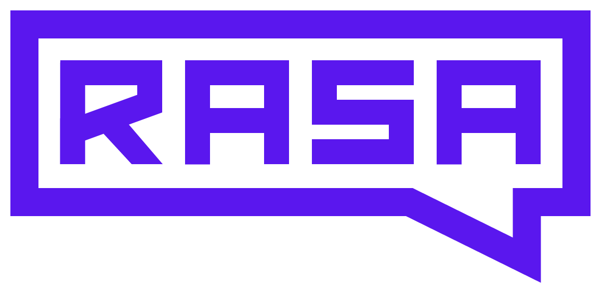
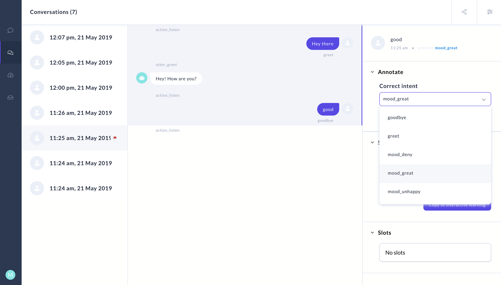
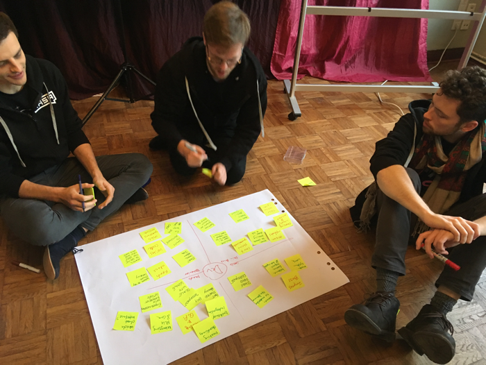
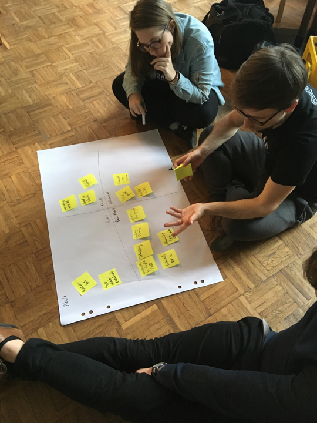
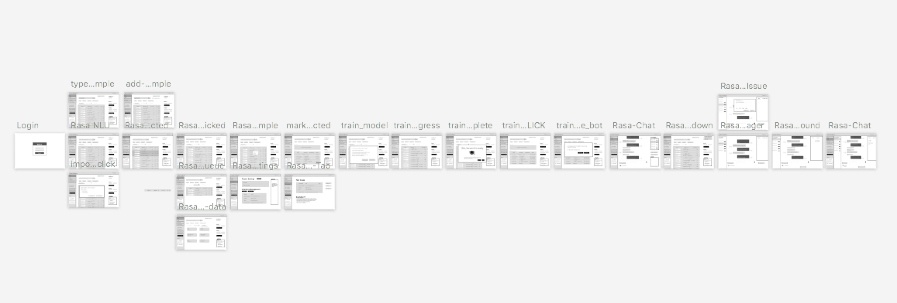
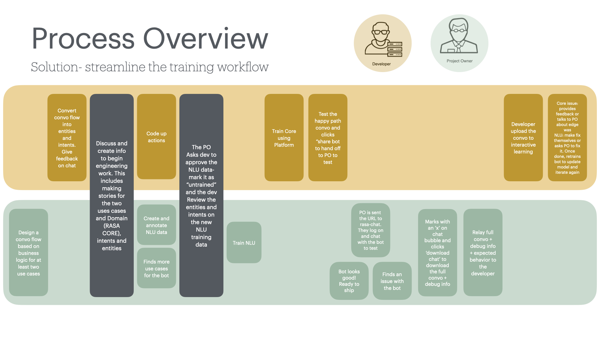
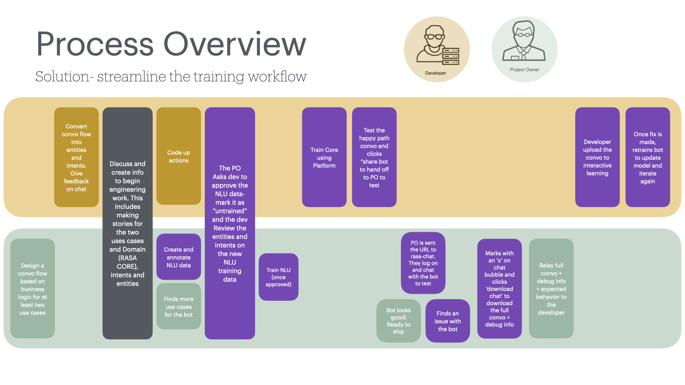
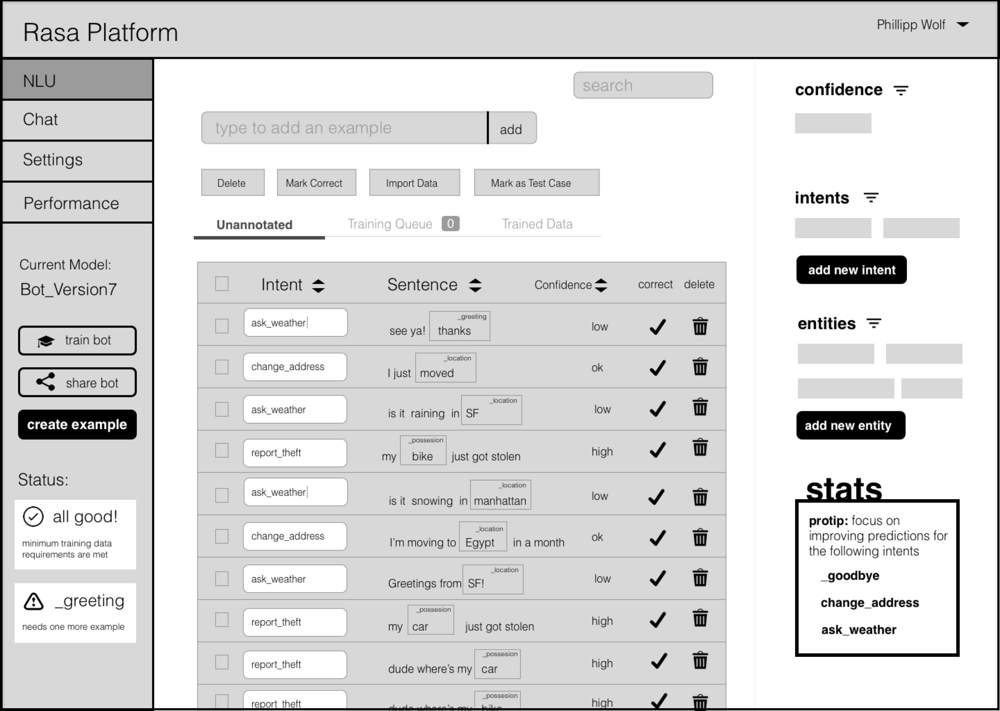
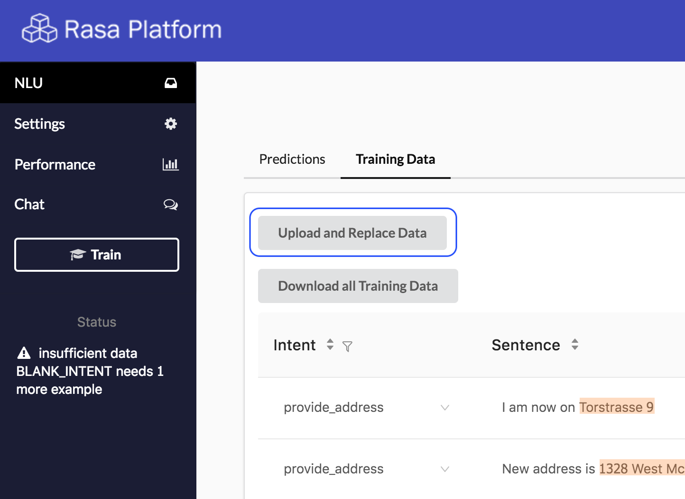

Case Study · Rasa · 2017–2018, Berlin
Letting non-engineers train chatbots
Rasa Platform is an ML-Ops tool for building and training enterprise chatbots — pre-ChatGPT. As the solo front-end engineer, I researched, designed, and shipped the React web app that cut handoff and training time by 40% and helped Rasa pivot from services to a product company.
An ML-Ops platform for enterprise chatbots, built in 2017 — years before ChatGPT. Teams used it to design conversation flows, annotate and train NLU data, test the bot, and ship it. The closest tool today is Weights & Biases' Weave for LLMs.
The vision: let machine-learning engineers and non-technical project owners build a chatbot together, in one shared tool — instead of lobbing files back and forth.


The Problem
Two very different users, one bot
Building a chatbot split the work between a machine-learning developer and a non-technical project owner — two people who barely shared a workflow. The handoff was slow, and no one could see how well the bot was performing. I framed the work as five questions:
- Make debugging training data easier?
- Make annotating data less tedious?
- Show how good the bot really is?
- Smooth dev–PM collaboration?
- Make deploying changes easier?
I led design workshops with developers, project owners, and end users to learn how each saw chatbot creation. Getting different roles in one room to hear each other was itself a win — it sparked a real culture shift.


We mapped the current journey from both the engineer's and the project owner's point of view, then turned each pain point into an opportunity for the platform — sketching the end-to-end structure and pressure-testing feasibility with engineers before designing.



The redesign gave both users a single shared loop. The developer builds and trains the bot, then shares it with a link. The project owner chats to test it, flags a bad reply with an “x”, and sends the full conversation plus debug info back. The developer fixes it in interactive learning and retrains — no more lossy handoffs.
I designed the NLU training queue (with confidence scores so non-engineers can see exactly what to fix), the chat + debug playground, and the train/share flow — then built it in React, going straight from low-fi wireframes to production under tight deadlines.


Outcome
Impact & outcomes
The work helped Rasa shift from a professional-services company — designing bespoke bots per customer — to a repeatable, product-led business with happy customers.
Reflection
What I'd build next
The biggest learning: communicating how the ML model performs is crucial to the business. My next step would be richer performance analytics — comparing confidence across intents, surfacing best- and worst-performing intents, and tracking quality by model version — so both customers and engineers always know how good the bot is and how to make it better.
Working on the experience here is what cemented my interest in design and sparked my pivot from engineer to designer.